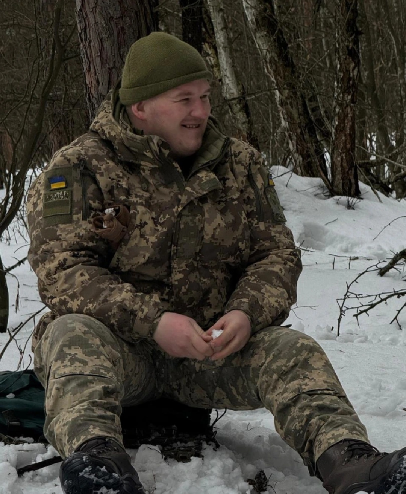

ВІТАЛІЙ МАЛЮШЕВСЬКИЙ
29.09.2000 — 30.04.2026
Загинув поблизу н.п. Піщане,
Харківської області
Похований в с-щі Залізці
«Я не хотів для тебе стать героєм, хотів бути просто сином, звичайним, як всі...»
Музика його душі
Віталік не уявляв свого життя без музики. Його фірмова колонка завжди була рядом — і в будні, і в свята, наповнюючи наше подвір'я звуками, під які хотілося жити.
Останній лист Віталія Малюшевського
0:00
Улюблені пісні Віталіка:
- Василь Хлистун — Хлопці будемо жити
- aboBACZ — А ти капуста, а ти розсада
- Трохим Карета — Вишня, акація, без
- Олександр Кварта — Струмочок
- Гурт Антитіла — Вдома
- Гурт Експрес — Вдалині за селом
*Ви можете перемикати пісні кнопками в плеєрі або вибрати зі списку
Його сповідь перед рідними
Простіть мені, рідні, за сльози і горе,
Я знаю, не був ідеальним для всіх.
Бував я упертим, як вітер у полі,
Та понад усе берегти вас хотів.
Вибач, матусю, за ночі без сну,
Вибач, мій тату, за вдачу мою.
Сестро і браття, тримайте стіну,
Я більше не з вами у цьому строю.
Не плачте за мною, я біль відпустив,
Я в кожній сльозині, що впала в траву.
Я просто земний свій маршрут завершив,
І зорі над вами тепер стережу.
Таким ми його пам'ятаємо
Нас п'ятеро в мами, і він завжди був нашим містком, нашою радощами та щирістю. Його посмішка на цих кадрах залишається з нами назавжди.